FILMES QUE MARCARAM CADA GERAÇÃO
Do clássico ao contemporâneo, os filmes atravessam gerações, conquistando o público e marcando histórias que nunca serão esquecidas.

Do clássico ao contemporâneo, os filmes atravessam gerações, conquistando o público e marcando histórias que nunca serão esquecidas.
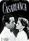
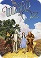
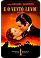
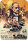
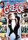
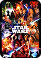
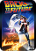
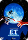
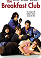
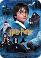
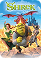
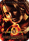
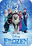
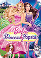